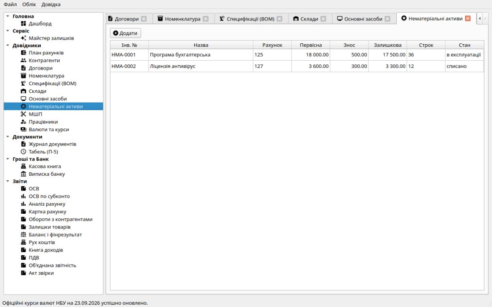
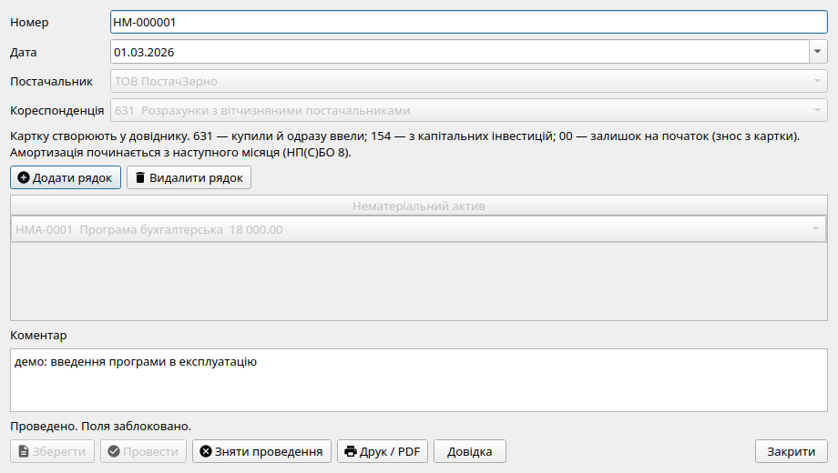
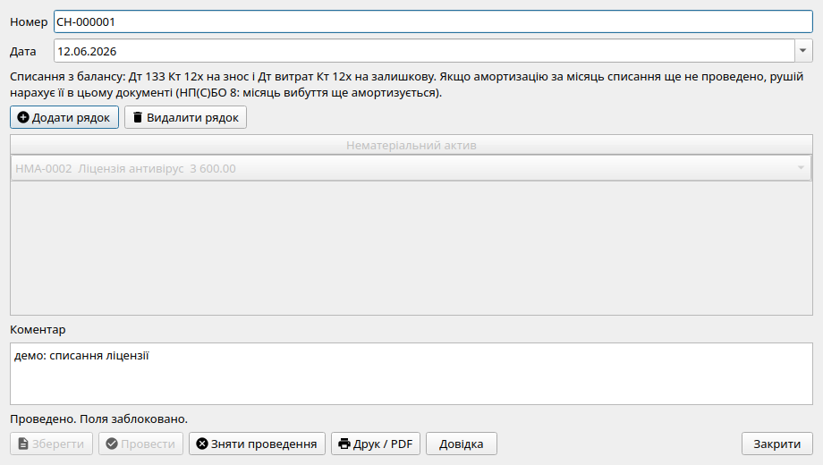
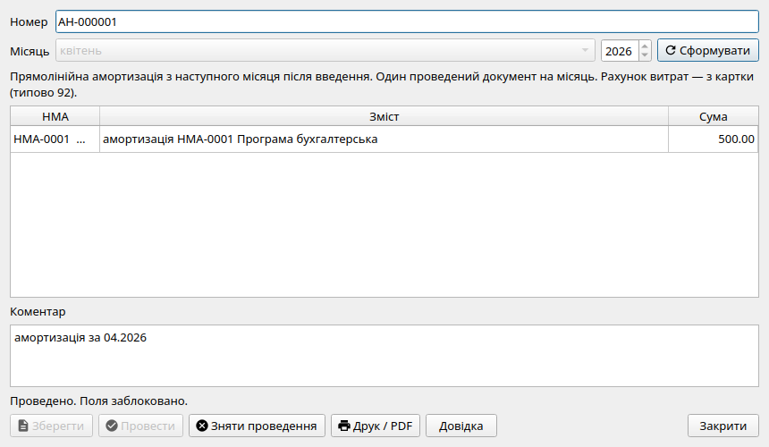

Облік нематеріальних активів (НП(С)БО 8)
Облік нематеріальних активів (НМА) у програмі «Фінік» ведеться відокремлено від основних засобів у чіткій відповідності до положень Національного положення (стандарту) бухгалтерського обліку НП(С)БО 8 «Нематеріальні активи».

Розділ «Нематеріальні активи»: реєстр карток прав на інтелектуальну власність, програмного забезпечення, ліцензій та торговельних марок.
План рахунків для обліку НМА
- 125 «Авторське право та суміжні з ним права»: комп'ютерні програми, ліцензійне програмне забезпечення, веб-сайти, бази даних, відео- та аудіоконтент.
- 127 «Інші нематеріальні активи»: торговельні марки (знаки для товарів і послуг), права на використання комерційних назв, ліцензії на право діяльності, патенти, технології.
- 133 «Накопичена амортизація нематеріальних активів»: контрактивний рахунок накопиченого зносу НМА (у Балансі віднімається від вартості 125/127).
- 154 «Придбання (створення) нематеріальних активів»: рахунок капітальних інвестицій у створення або купівлю прав інтелектуальної власності.
Етапи обліку нематеріальних активів
1. Картка об'єкта НМА
У лівій панелі навігації виберіть розділ «Нематеріальні активи» та натисніть «Створити картку»:
- Інвентарний номер: індивідуальний обліковий код ліцензії чи права;
- Найменування: назва програмного забезпечення або свідоцтва на знак;
- Рахунок обліку: вибір субрахунку 125 або 127;
- Строк корисного використання: період дії ліцензії або очікуваний строк служби у місяцях;
- Первісна вартість: сума фактично понесених витрат на придбання чи реєстрацію;
- Рахунок витрат: рахунок 92 (загальногосподарські витрати).
2. Введення в експлуатацію (господарський оборот)
Документ «Введення в експлуатацію НМА» зараховує об'єкт на баланс:
- Дт 125/127 Кт 154: якщо витрати на розробку чи реєстрацію попередньо списувалися на капекс документом «Надходження послуг»;
- Дт 125/127 Кт 631: пряме придбання прав чи програмного продукту у постачальника;
- Дт 125/127 Кт 00: перенесення залишків активів з іншої системи (накопичений початковий знос фіксується проводкою Дт 00 Кт 133).
- Друкована форма: Акт введення в господарський оборот нематеріальних активів.

Форма введення НМА: вибір об'єкта, рахунку 125/127 та фіксація балансової вартості.
3. Щомісячне нарахування амортизації НМА
Документ «Амортизація НМА» є самостійним документом, що формується окремо від амортизації ОЗ:
- Згідно з НП(С)БО 8, амортизація починається з місяця, наступного за місяцем введення в експлуатацію.
- Розрахунок ведеться за прямолінійним методом:
Первісна вартість / Строк у місяцях.
- Проводка: Дт 92 Кт 133.
- В останній розрахунковий місяць система автоматично коригує копійки для точного закриття амортизованої вартості.
- Друкована форма: Відомість нарахування амортизації нематеріальних активів.
4. Списання та вибуття нематеріальних активів
При закінченні терміну дії ліцензійного договору або припиненні використання ПЗ створюється документ «Списання НМА»:
- Згідно з нормами НП(С)БО 8, амортизація нараховується за місяць вибуття і припиняється з наступного місяця. Якщо в поточному місяці амортизація ще не нараховувалася, списання автоматично нараховує належну частину зносу за поточний місяць.
- Проводки списання:
- Дт 133 Кт 125/127 — списання накопиченого зносу об'єкта;
- Дт 92 Кт 125/127 — списання залишкової вартості на витрати періоду.
- Друкована форма: типовий Акт вибуття (списання) нематеріальних активів.

Діалог списання нематеріальних активів: списання зносу по 133 рахунку та ліквідація залишкової вартості.

Нарахування амортизації нематеріальних активів: автоматичний розрахунок місячної суми та проводка Дт 833 Кт 133.